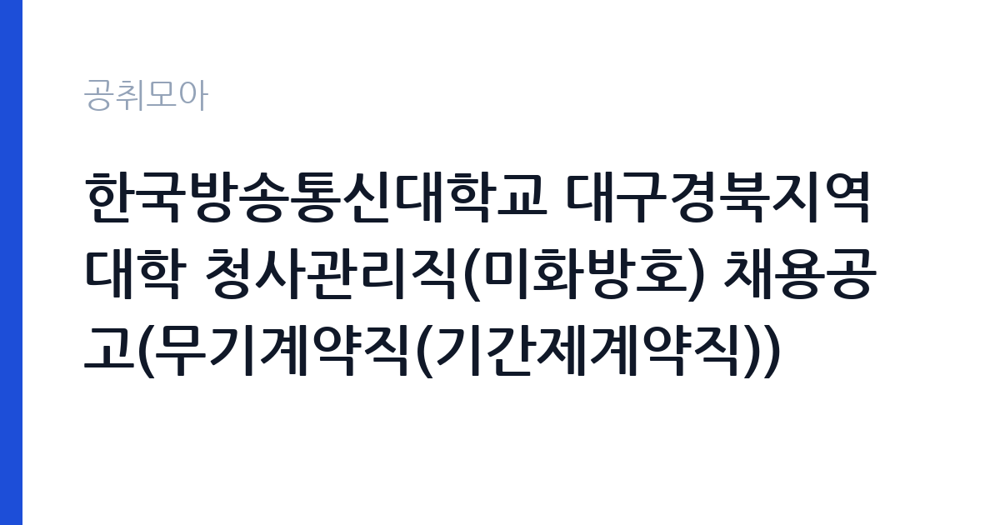

[국가기관] 한국방송통신대학교 대구경북지역대학 청사관리직(미화방호) 채용공고(무기계약직(기간제계약직))
한국방송통신대학교 대구.경북지역대학 · 대구 · 마감 2026-10-15 (D-11) · 출처 나라일터

한눈에 보는 모집 조건
| 기관 | 한국방송통신대학교 대구.경북지역대학 |
|---|---|
| 공고명 | 한국방송통신대학교 대구경북지역대학 청사관리직(미화방호) 채용공고(무기계약직(기간제계약직)) |
| 고용형태 | 공무직 |
| 근무지 | 대구 |
| 게시일 | 2026-10-04 |
| 마감일 | 2026-10-15 (D-11) |
지원자격, 이렇게 읽으세요
- 청사관리직(미화방호) 1명
- 접수 ~2026-10-15 마감
- 세부 조건은 원문 공고문 확인
세부 응시자격과 우대 조건은 반드시 붙임 채용공고문을 확인하셔야 합니다. 이 공고에서 가장 주의할 점은 제목에 무기계약직과 기간제계약직이 함께 적혀 있다는 것입니다. 실제 계약 형태와 계약 기간, 갱신 조건이 어떻게 되는지 원문 공고문에서 정확히 확인하신 뒤 지원하셔야 합니다. 접수 방법도 특이합니다. 서류에 서명한 뒤 하나의 파일로 스캔해 PDF로 제출해야 하며, 이메일 주소는 pghee@mail.knou.ac.kr입니다. 분할 첨부나 다른 형식으로 보내면 접수 누락 위험이 있으니 형식을 맞추셔야 합니다. 주 40시간 근무를 원칙으로 하되 주말근무와 교대근무가 있을 수 있다고 명시되어 있어 교대 근무가 가능한 분이 지원하시는 것이 좋습니다.
이 공고의 포인트
이 공고의 가장 큰 매력은 국립대 소속 무기계약직이라는 점입니다. 방송통신대학교는 전국 거점 지역대학을 운영하는 국립대학으로, 소속 공무직은 정년과 처우 면에서 안정성이 높습니다. 채용 인원이 1명이라 경쟁이 있을 수 있지만, 미화·방호 복합 직무는 지원 문턱이 낮은 편이라 대구 거주 구직자에게는 현실적인 기회입니다. 근무지가 대구 달서구 도심이라 출퇴근 접근성도 좋습니다. 다만 주말·교대 근무 가능성이 열려 있으므로 본인의 생활 패턴과 맞는지 미리 따져보셔야 합니다.
전형은 어떻게 진행되나
원서 접수는 이메일로만 받으며 제출 기간은 2026년 10월 4일부터 10월 15일 18시까지입니다. 이후 전형 단계와 일정은 붙임 공고문에 안내되어 있으니 원문에서 확인하셔야 합니다. 일반적으로 국립대 공무직 채용은 서류 심사와 면접으로 진행되는 경우가 많습니다. 이메일 접수 특성상 마감일 서버 혼잡이나 오발송에 대비해 최소 하루 전에는 제출을 마치시는 것을 권장합니다. 제출 후에는 접수 확인 메일이나 담당자 유선 확인을 해두시면 안전합니다. 문의처는 지역대학 채용담당자이며 전화번호는 053-606-6686입니다.
원문에서 확인한 전형 방식
한국방송통신대학교 대구경북지역대학에서는 청사관리직원(미화방호)을 다음과 같이 신규 채용하오니 많은 지원 바랍니다. 1. 채용분야: 청사관리직(미화방호) 2. 채용인원: 1명 3. 근무지역: 대구경북지역대학(대구광역시 달서구 선원로 21) 4. 임용 예정일: 2026. 11. 1. 5. 근무시간: 주5일 40시간 근무, 주말근무, 교대근무 ※ 주40시간 범위 내에서 근무일수 및 근무시간은 조정될 수 있으며, 구체적 근무형태는 부서 사정에 따라 달라질 수 있음. 6. 응시원서 제출기간 및 방법 - 제출기간: 2026. 10. 4.(일) ~ 10. 15.(목) 18:00까지 - 제출방법: 이메일 접수 ※ e-mail: pghee@mail.knou.ac.kr ※ 제출서류는 서명 후 반드시 하나의 파일로 스캔하여 PDF파일로 제출 7. 계약기간, 근무조건, 응시자격, 제출서류 등 자세한 사항은 반드시 붙임"채용공고문"을 확인하시기 바랍니다. 8. 문의 사항은 지역대학 채용담당자(☎053-606-6686)
이런 분께 추천해요
- 대구·경북에 거주하며 국립대 소속 안정적인 일자리를 찾는 분께 추천합니다.
- 미화나 시설·방호 관련 근무 경험이 있어 바로 현장에 투입될 수 있는 분께 잘 맞습니다.
- 주말·교대 근무를 감당할 수 있고 장기 근속을 희망하는 분께 적합합니다.
지원 전 체크리스트
- 제목에 무기계약직과 기간제계약직이 함께 표기되어 있으니 실제 계약 형태를 원문에서 반드시 확인하십시오.
- 지원 서류는 서명 후 하나의 PDF 파일로 스캔해 이메일로 제출해야 하며 형식을 어기면 탈락 사유가 될 수 있습니다.
- 접수 마감은 10월 15일 18시이므로 최소 하루 전 제출을 권장합니다.
- 주 40시간 범위 내에서 주말·교대 근무가 있을 수 있으니 본인 일정과 맞는지 확인하십시오.
모집 일정과 제출 타이밍
원서 접수 기간은 2026년 10월 4일부터 10월 15일 18시까지이며 이메일 접수만 가능합니다. 임용 예정일은 2026년 11월 1일입니다. 접수 기간이 12일로 넉넉한 편이지만 이메일 접수 특성상 마감일 혼잡을 피하려면 10월 13일 이전에 제출하시는 것이 안전합니다. 서류 심사나 면접 일정은 붙임 공고문에 안내되어 있으니 원문에서 확인하십시오.
직무 이해하기: 국가기관
담당 직무는 청사관리직으로 미화와 방호를 함께 맡는 자리입니다. 미화는 청사 내외 청소와 환경 정비를, 방호는 출입 관리와 청사 순찰, 야간·주말 당직 성격의 업무를 포함하는 것으로 보입니다. 구체적인 업무 분장과 교대 형태는 원문 공고문에서 확인하셔야 합니다. 대구경북지역대학은 방송대 대구·경북 거점 캠퍼스로, 학사 관리와 지역 학생 지원이 이루어지는 곳이라 내방 민원 응대도 업무 일부가 될 수 있습니다. 체력과 책임감이 요구되는 자리이며, 관련 경험이 있으면 면접에서 강점이 됩니다.
자기소개서 작성 팁
지원서에는 국립대 청사관리라는 직무 특성에 맞춰 성실성과 장기 근속 의지를 구체적으로 쓰시는 것이 좋습니다. 미화·방호·시설 관련 경험이 있다면 기간과 담당 내용을 수치와 함께 적으십시오. 교대나 주말 근무 경험이 있다면 그 사례를 들어 근무 적응력을 보여주는 것이 효과적입니다. 대구경북지역대학이 원격교육 거점이라는 점을 언급하며 공공 교육기관에서 일하고 싶다는 동기를 연결하면 설득력이 높아집니다. 분량은 간결하게 핵심만 정리하되, 오탈자와 서명 누락이 없도록 제출 전 다시 확인하십시오.
면접 준비 포인트
면접에서는 교대·주말 근무에 대한 수용 의사를 가장 먼저 물을 가능성이 높으니 명확히 답변할 준비를 하십시오. 미화·방호 업무 중 겪었던 실제 상황과 대처 사례를 하나씩 준비해 가시면 좋습니다. 청사 이용자나 민원인을 대하는 태도, 야간·휴일 상황 발생 시 대응 요령도 단골 질문입니다. 국립대 직원으로서의 품위와 보안 의식을 묻는 질문에도 대비하십시오. 면접 복장은 단정하게, 도착은 여유 있게 하시는 것이 기본입니다.
급여·근무조건 읽는 법
이 공고의 원문에는 보수표가 별도로 공개되어 있지 않아 정확한 급여는 원문 공고문에서 확인하셔야 합니다. 참고로 국립대 공무직 보수는 통상 2026년 최저임금인 월 2,156,880원(시급 10,320원, 주 40시간 기준, 고용노동부 고시)을 하한으로 하며, 여기에 급식비와 명절상여금 등이 기관 규정에 따라 붙는 구조입니다. 기본급과 수당, 상여를 합한 실수령은 기관별 처우 규정에 따라 달라지므로 붙임 공고문의 근무조건란을 꼼꼼히 확인하십시오. 출처가 확인되지 않은 연봉 수치는 믿지 마시고 원문 기준으로 판단하시는 것이 안전합니다.
자주 묻는 질문
- 무기계약직과 기간제계약직 중 어느 것인가요?
공고 제목에는 두 표현이 함께 적혀 있어 원문 붙임 공고문에서 계약 형태와 기간을 직접 확인하셔야 합니다. 문의처인 053-606-6686으로 묻는 것도 방법입니다. - 이메일 접수는 어떻게 하나요?
지원 서류에 서명한 뒤 하나의 파일로 스캔해 PDF로 만들어 pghee@mail.knou.ac.kr로 보내시면 됩니다. 여러 파일로 나누어 보내지 마십시오. - 교대근무는 확정인가요?
공고문에는 주 40시간 범위 내에서 근무일수와 시간이 조정될 수 있고 주말·교대 근무가 있을 수 있다고 안내되어 있습니다. 구체적인 근무 형태는 부서 사정에 따라 정해지므로 면접에서 확인하십시오.
함께 보면 좋은 공고
[국가기관] 국립창원대학교 입학과 기간제근로자(입학사정관) 채용 공고 — 마감 2026-10-12[국가기관] 2026년 인제경찰서 무기계약(보일러 등 시설관리) 근로자 채용 재공고 — 마감 2026-10-08[국가기관] 보건복지부 아동보호자립과 공무직 채용 일정 변경 공고 — 마감 2026-10-13출처: 나라일터 공개정보를 바탕으로 공취모아가 정리한 안내글입니다. 모집 조건·일정은 변경될 수 있으니 지원 전 반드시 원문 공고문을 확인하세요. 본 글은 정보 제공용이며 합격을 보장하지 않습니다.